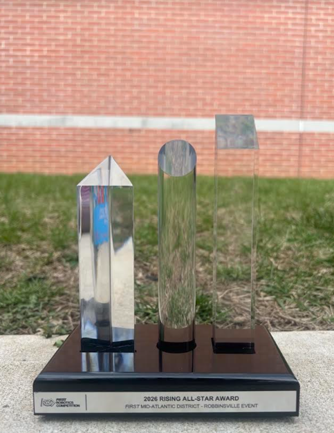

Wyatt, our FRC robot
A swerve-drive robot with four modules, each run by a NEO and a NEO 550, plus a shooter for the dodgeball-sized game pieces. The 2026 FIRST Mid-Atlantic game was more or less basketball for robots. I spent most of the season on wiring, which meant checking every connection twice and learning to ask for help before a deadline instead of after. We placed 8th at our first event, and I received the Rising All-Star Award.
Swerve drive · Wiring · Hand tools
